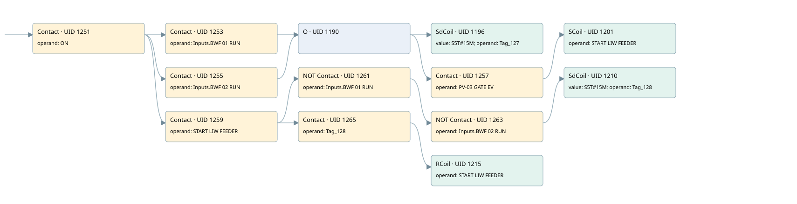

liw feeder
motors 1 · 검색 색인 순서 44 · 원본 내부 NID 추정 43
백업 PLF 원본의 2820528 바이트 위치에서 복원한 XML. 검색 문서 1973의 객체 키 16102200d011000000000000와 연결했다. 이름 해석 14/14개. 남은 RefId는 상수 또는 미해석 참조다.
연결 구조 다시 그리기
원본 Part/PCon/Wire를 이용한 연결도다. TIA 화면의 래더 배치 또는 실행 결과를 재현한 그림은 아니다. 핀 연결은 아래 표와 원본 XML을 기준으로 읽는다. 노드 위에 마우스를 두면 피연산자 이름을 볼 수 있다.

접점·코일·블록과 피연산자
| Part UID | Gate | Negated 핀 | 연결 피연산자 |
|---|---|---|---|
| 1251 | Contact | operand = ON | |
| 1253 | Contact | operand = Inputs.BWF 01 RUN | |
| 1255 | Contact | operand = Inputs.BWF 02 RUN | |
| 1190 | O | ||
| 1196 | SdCoil | value = S5T#15M; operand = Tag_127 | |
| 1257 | Contact | operand = PV-03 GATE EV | |
| 1201 | SCoil | operand = START LIW FEEDER | |
| 1259 | Contact | operand = START LIW FEEDER | |
| 1261 | Contact | operand | operand = Inputs.BWF 01 RUN |
| 1263 | Contact | operand | operand = Inputs.BWF 02 RUN |
| 1210 | SdCoil | value = S5T#15M; operand = Tag_128 | |
| 1265 | Contact | operand = Tag_128 | |
| 1215 | RCoil | operand = START LIW FEEDER |
접점 경로를 펼친 조건식
Contact·O/A·비교기의 원본 연결을 읽기 쉽게 펼친 보조 해석이다. POWER는 전원 레일 시작을 뜻한다. 호출 블록·에지·타이머의 내부 동작과 다중 쓰기 순서는 이 표로 실행 검증하지 않았다. 미해석 핀과 RefId는 원문 연결표에서 확인한다.
| UID | 동작 | 대상 | 원본 접점 경로 | 내용 |
|---|---|---|---|---|
| 1196 | SdCoil | Tag_127 | ((ON AND Inputs.BWF 01 RUN) OR (ON AND Inputs.BWF 02 RUN)) | 시간 동작 SdCoil; 타이머 의미 추가 확인 / 시간 인자 S5T#15M |
| 1201 | SCoil | START LIW FEEDER | (((ON AND Inputs.BWF 01 RUN) OR (ON AND Inputs.BWF 02 RUN)) AND PV-03 GATE EV) | 조건 성립 시 Set |
| 1210 | SdCoil | Tag_128 | (((ON AND START LIW FEEDER) AND NOT [Inputs.BWF 01 RUN]) AND NOT [Inputs.BWF 02 RUN]) | 시간 동작 SdCoil; 타이머 의미 추가 확인 / 시간 인자 S5T#15M |
| 1215 | RCoil | START LIW FEEDER | ((ON AND START LIW FEEDER) AND Tag_128) | 조건 성립 시 Reset |
원본 배선 연결
| Wire UID | 동일 Wire 연결 끝점 |
|---|---|
| 1267 | Powerrail {} ↔ Part 1251.in |
| 1230 | ORef 1216 (ON) ↔ Part 1251.operand |
| 1252 | Part 1251.out ↔ Part 1253.in ↔ Part 1255.in ↔ Part 1259.in |
| 1231 | ORef 1217 (Inputs.BWF 01 RUN) ↔ Part 1253.operand |
| 1254 | Part 1253.out ↔ Part 1190.in1 |
| 1232 | ORef 1218 (Inputs.BWF 02 RUN) ↔ Part 1255.operand |
| 1256 | Part 1255.out ↔ Part 1190.in2 |
| 1233 | Part 1190.out ↔ Part 1196.in ↔ Part 1257.in |
| 1234 | ORef 1219 (S5T#15M) ↔ Part 1196.value |
| 1235 | ORef 1220 (Tag_127) ↔ Part 1196.operand |
| 1236 | ORef 1221 (PV-03 GATE EV) ↔ Part 1257.operand |
| 1258 | Part 1257.out ↔ Part 1201.in |
| 1238 | ORef 1222 (START LIW FEEDER) ↔ Part 1201.operand |
| 1240 | ORef 1223 (START LIW FEEDER) ↔ Part 1259.operand |
| 1260 | Part 1259.out ↔ Part 1261.in ↔ Part 1265.in |
| 1242 | ORef 1225 (Inputs.BWF 01 RUN) ↔ Part 1261.operand |
| 1262 | Part 1261.out ↔ Part 1263.in |
| 1243 | ORef 1226 (Inputs.BWF 02 RUN) ↔ Part 1263.operand |
| 1264 | Part 1263.out ↔ Part 1210.in |
| 1241 | ORef 1224 (S5T#15M) ↔ Part 1210.value |
| 1245 | ORef 1227 (Tag_128) ↔ Part 1210.operand |
| 1246 | ORef 1228 (Tag_128) ↔ Part 1265.operand |
| 1266 | Part 1265.out ↔ Part 1215.in |
| 1248 | ORef 1229 (START LIW FEEDER) ↔ Part 1215.operand |
식별자 해석 근거 14개
| ORef UID | RefId | 이름 | IdentXmlPart 파일 | 해석 방법 |
|---|---|---|---|---|
| 1216 | 1 | ON | 0602-IdentXmlPart.xml | UID/RID + search-text + NID agreement |
| 1217 | 257 | Inputs.BWF 01 RUN | 0604-IdentXmlPart.xml | UID/RID + search-text + NID agreement |
| 1218 | 258 | Inputs.BWF 02 RUN | 0604-IdentXmlPart.xml | UID/RID + search-text + NID agreement |
| 1220 | 197 | Tag_127 | 0602-IdentXmlPart.xml | UID/RID + search-text + NID agreement |
| 1219 | 196 | S5T#15M | 0606-IdentXmlPart.xml | literal candidate: UID/RID/NID + nearby named declarations + search-text agreement |
| 1221 | 195 | PV-03 GATE EV | 0602-IdentXmlPart.xml | UID/RID + search-text + NID agreement |
| 1222 | 198 | START LIW FEEDER | 0602-IdentXmlPart.xml | UID/RID + search-text + NID agreement |
| 1223 | 198 | START LIW FEEDER | 0602-IdentXmlPart.xml | UID/RID + search-text + NID agreement |
| 1225 | 257 | Inputs.BWF 01 RUN | 0604-IdentXmlPart.xml | UID/RID + search-text + NID agreement |
| 1226 | 258 | Inputs.BWF 02 RUN | 0604-IdentXmlPart.xml | UID/RID + search-text + NID agreement |
| 1227 | 199 | Tag_128 | 0602-IdentXmlPart.xml | UID/RID + search-text + NID agreement |
| 1224 | 196 | S5T#15M | 0606-IdentXmlPart.xml | literal candidate: UID/RID/NID + nearby named declarations + search-text agreement |
| 1228 | 199 | Tag_128 | 0602-IdentXmlPart.xml | UID/RID + search-text + NID agreement |
| 1229 | 198 | START LIW FEEDER | 0602-IdentXmlPart.xml | UID/RID + search-text + NID agreement |
검색 코드 보조 자료
참조 명칭을 찾기 위한 자료이며 실행 순서나 AND/OR 관계는 위 연결표로 확인한다.
"on" "inputs"."bwf 01 run" "tag_127" s5t#15m "inputs"."bwf 02 run" "start liw feeder" "inputs"."bwf 01 run" "inputs"."bwf 02 run" "tag_128" s5t#15m "tag_128" "start liw feeder" "pv-03 gate ev" "start liw feeder"